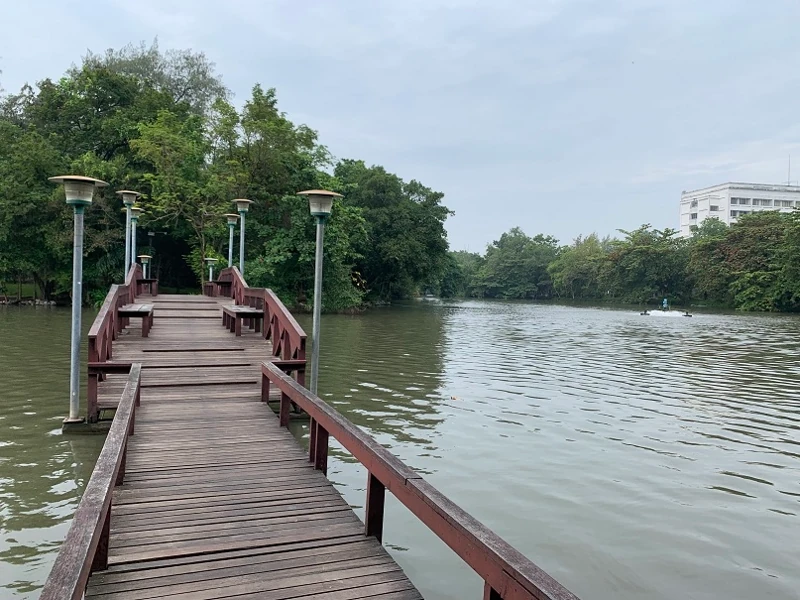
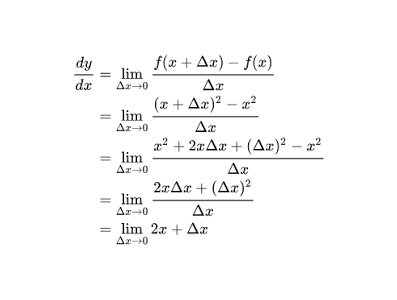

12 ธันวาคม 2566
14 ธันวาคม 2566 (แก้ไข)
บอกเล่าประสบการณ์การเรียนวิทยาการข้อมูลในมหาวิทยาลัยศิลปากร
สวัสดีครับ ผมเป็นนักศึกษาปี 4 สาขาวิทยาการข้อมูล มหาวิทยาลัยศิลปากร วิทยาเขตพระราชวังสนามจันทร์ ตอนนี้ผมใกล้จะเรียนจบแล้ว เหลือขั้นตอนทำวิจัยอีกนิดหน่อยกับการตรวจสอบจบ ซึ่งก็คือจะจบปี 2567 (ถ้าทุกอย่างเรียบร้อย)

เหตุผลที่ผมตัดสินใจเขียน blog นี้คือเนื่องจากเทคโนโลยีวิทยาการข้อมูลหรือ Data Science กำลังมาแรงในยุคนี้มาก และตัวเลือกในการเรียนต่อมหาวิทยาลัยที่ศึกษาเกี่ยวกับเทคโนโลยีนี้โดยตรงในประเทศไทยยังมีอยู่ไม่มาก หมายความว่า ถ้าคุณอยากทำงานด้าน Data science คุณมีตัวเลือกคือเรียนปริญญาตรีที่สอนหลักสูตรนี้โดยตรง หรือ เรียนในคณะสาขาที่เกี่ยวข้องแทนคือ คอมพิวเตอร์ ธุรกิจ หรือ สถิติ แล้วหาความรู้ในด้านอื่นๆที่เหลือเพิ่มเติมเอาเอง ไม่อย่างนั้นก็ศึกษาปริญญาโทต่อ และอีกตัวเลือกก็คือเรียนอะไรก็ได้หรือจะไม่เรียนปริญญาตรีก็ได้ แล้วเรียนออนไลน์ หาความรู้จากบูธแคมป์ ทำโปรเจ็กต์ดีๆใส่พอร์ตโฟลิโอ แต่ก็แลกกับการที่คุณจะพลาดโอกาสในการสร้างเครือข่าย ซึ่งจะส่งผลต่อความยากลำบากในการสมัครงานเพิ่มขึ้นไปอีก จากการที่คุณไม่มีใบปริญญาหรือจบมาจากคณะสาขาที่ไม่เกี่ยวข้อง จากตัวเลือกทั้งหมดที่ผมเล่ามาอาจจะทำให้หลายๆคนเกิดความไม่แน่ใจ ผมที่เป็นนักศึกษาที่ได้เลือกตัวเลือกคือเรียนปริญญาตรี Data Science โดยตรง จึงอย่างบอกเล่าประสบการณ์ของตัวเอง เพื่อช่วยในการตัดสินใจสำหรับคนที่สนใจเข้ามาเรียนที่นี่
ประวัติเกี่ยวกับคนเขียนนิดหน่อย
ผมชื่อมาร์ค (ชื่อเต็ม กฤติภูมิ ผลาจันทร์) เกิดปี 2544 ตอนสอบเข้าจะเป็นเด็ก63 ใช้ชีวิตเรียนอยู่นครพนมตั้งแต่เกิดจนถึง ม.6 เดินทางมาเรียนที่ศิลปากรด้วยเครื่องบินจากนครพนมมาลงที่กรุงเทพแล้วก็ต่อรถตู้ไปนครปฐม ช่วงปีที่ผ่านมาผมเปลี่ยนจากนั่งรถตู้เป็นรถไฟแทน แล้วก็พักหอพักใกล้ๆมอแล้วกลับบ้านตอนปิดเทอม ตอนเด็กผมอยากเป็นนักบิน เพราะอยากมีเงินเยอะๆแล้วก็ได้ไปเที่ยวที่ไกลๆ แต่ก็ยอมแพ้เพราะเจอฟิสิกส์ ม.ต้น 5555 เหตุผลที่ผมเข้ามาเรียนที่นี่จะเล่าให้ฟังหลังสรุปเนื้อหาทั้งหมดนะ เพราะออกจะนอกเรื่องไปหน่อย
ขอบเขตเนื้อหาของ blog นี้
ผมตั้งใจจะเล่าให้ฟังแค่เนื้อหาที่เรียน (เฉพาะวิชาหลักๆที่เกี่ยวข้อง) ความรู้สึก และประสบการณ์ของตัวผมเองเท่านั้น ส่วนเรื่องของสภาพแวดล้อมมหาวิทยาลัย สังคม การใช้ชีวิต จะยังไม่พูดถึง
สิ่งสำคัญที่ผมอยากจะบอกคือ หลักสูตรวิทยาการข้อมูลในมหาวิทยาลัยผม เป็นหลักสูตรใหม่ "ใหม่" ในที่นี้คือใหม่มากๆ ซึ่งผมได้เรียนเป็นรุ่นที่ 3 หมายความว่าหลักสูตรจะยังมีการปรับเปลี่ยนใหม่อยู่เรื่อยๆ ผมไม่อยากให้คนอ่านเอาประสบการณ์ของผมเป็นเกณฑ์ในการวัดว่าเรียนวิทยาการข้อมูลที่นี่ดีหรือไม่ดี
เนื้อหาที่เรียนในปี 1
เทอม1
แคลคูลัสสำหรับนักวิทยาการข้อมูล
Fundamental ฟิสิกส์
Elementary สถิติ
Computer programming สำหรับนักวิทยาการข้อมูล
Foundation คอมพิวเตอร์และ Informatics
เทอม2
ภาษาอังกฤษในชีวิตประจำวัน
แคลคูลัสสำหรับนักวิทยาการข้อมูล 2
สถิติสำหรับนักวิทยาการข้อมูล
Foundation Of Data Science
ขอไม่ลงรายละเอียดเยอะนะว่าแต่ละวิชาเรียนอะไร ผมอาจจะทำเนื้อหาแยกไป blog ใหม่แทน จากปี 1 คุณจะสังเกตได้ว่าจะมีวิชาที่สอนให้นักวิทยาการข้อมูลโดยเฉพาะด้วย คำถามที่ว่า Data Science ที่ต้องมีความรู้ทางด้านคอมพิวเตอร์ ธุรกิจ และสถิติ จะเรียนจบใน 4 ปี ได้ยังไง คำตอบก็คือ เราจะไม่ได้เรียนทั้งหมด แค่เนื้อหานิดๆหน่อยๆ กับจุดที่ต้องเข้าใจเพื่อนำไปใช้วิเคราะห์ข้อมูลเท่านั้น ในปีนี้ผมได้ C+ แคลคูลัส กับฟิสิกส์เทอมแรก แคลคูลัสในเทอม 2 ดีขึ้นมาเป็น B มันไม่ได้ยากนะ จริงๆแคลคูลัสคนอื่น เขาก็เก็บ A กันเยอะแยะ ผมอ่อนวิทย์คณิตมาตั้งแต่ ม.ปลาย ละ ส่วนวิชาที่เหลือผมได้ A

ปี 1 จะเน้นไปที่พื้นฐานที่เป็นพื้นฐานจริงๆ จะมีบางวิชาที่ไม่ได้เกี่ยวกับวิเคราะห์ข้อมูลโดยตรง แต่ก็เป็นความรู้ที่นักศึกษาควรมี อย่างเช่น ภาษาอังกฤษ และกลุ่ม Foundation ผมแนะนำว่าเนื้อหาที่ต้องตั้งใจเรียนมากที่สุดเลยของปี 1 คือ สถิติ ความรู้สถิติจะได้ใช้อยู่ตลอดในการเรียนของที่นี่ รองลงมาจะเป็นโปรแกรมมิ่ง ภาษาหลักๆที่จะใช้เขียนโปรแกรมคือ Python ซึ่งเป็นภาษาที่อ่านง่าย ใช้ง่าย และใช้กับงานได้หลายประเภท
ที่จริงแล้วการเรียนที่นี่ ไม่จำเป็นต้องใช้คอมพิวเตอร์ตั้งโต๊ะหรือแล็ปท็อปที่สเป็คสูงมากก็ได้นะ เลือกแล็ปท็อปตัวที่น้ำหนักเบาแล้วก็เก็บแบตได้ดีก็พอ จะได้พกไปเรียนด้วยได้สะดวก ราคา 1 หมื่น หรือ 2 หมื่น cpu เป็น core i3 i5 เก่ากว่า gen ล่าสุด 2 ปี หรือใช้การ์ดจอแบบ integrated ก็ได้ วิเคราะห์ข้อมูลที่ใช้คอมพิวเตอร์สเป็คสูงก็ดี ต้องใช้การ์ดจอ Nvidia และความเร็วของการประมวลผลข้อมูลจะดูได้จาก Cuda core ความจำ Ram ก็สำคัญ แต่ว่าการเรียนในมหาลัยเราจะยังไม่ได้สัมผัสข้อมูลที่ขนาดใหญ่เกินกว่าคอมพิวเตอร์สเป็คทั่วไปหรือสเป็คต่ำจะทำงานไม่ได้ สำคัญที่เปิด Google colab ได้ก็พอ เพราะ colab จะช่วยประมวลผล Python ให้ ส่วนบางวิชาที่เรียนด้วยภาษา R ซึ่ง R ก็ไม่ได้กินทรัพยากรเยอะ คอมพิวเตอร์มหาลัยเก่าๆที่ใช้ Windows7 ก็ยังใช้ R ได้อยู่ ชุดข้อมูลที่เรียนในวิชานี้ก็เป็นข้อมูลไม่เกิน 1 Gb จาก kaggle ทั้งนั้น สรุปคือเก็บเงินไว้ซื้อตอนปี 3 ถ้าเลือกเรียน BI ซึ่งจำเป็นต้องใช้โปรแกรม tableau กับ powerBI ซึ่งใช้ทรัพยากรเยอะพอสมควร แต่ถ้าไม่ลงวิชาเลือกนี้ก็ซื้อตอนปี 4 ดีกว่าหรือไม่ก็ตอนทำงาน
เนื้อหาที่เรียนในปี 2
เทอม1
ภาษาอังกฤษวิทยาศาสตร์
พีชคณิตสำหรับนักวิทยาการข้อมูล
Data Structure และ อัลกอริทึม
ระบบ Database สำหรับนักวิทยาการข้อมูล
Data Science Toolbox
เทอม2
ภาษาอังกฤษเพื่อการสื่อสาร
Probability สำหรับนักวิทยาการข้อมูล
Computational Method สำหรับนักวิทยาการข้อมูล
เว็บเทคโนโลยี
การรวบรวมและทำความสะอาดข้อมูล
การประมวลผลข้อมูลขนาดใหญ่เบื้องต้น
ในปี 2 นักศึกษาจะเริ่มทำโปรเจกต์วิเคราะห์ข้อมูลได้นิดๆหน่อยๆแล้ว รู้จักใช้ Naives Bayes, การทำ MapReduce ใน Cloudera, สามารถใช้ฐานข้อมูล MySQL, เข้าใจ Concept ของ BigO และเข้าใจ Data Structure พวก array กราฟ และ ต้นไม้ เทอมแรกจะพิเศษหน่อยเพราะเป็นเทอมที่ปรับการเรียนการสอนส่วนใหญ่เป็นออนไลน์เพราะโรคระบาด ผมที่เรียนออนไลน์เกือบทุกวิชาก็เรียนได้สบายๆ แล้วก็เป็นเทอมแรกและเทอมเดียวที่ผมได้ A ทุกตัวด้วย
ปี 2 เทอม 2 เนื้อหาจะเริ่มเข้มข้นขึ้น แล้วก็มีงานกลุ่มเยอะมาก รู้สึกว่าจะมีงานกลุ่มแทบจะทุกวิชาเลย สิ่งสำคัญที่ได้เรียนรู้ในปี 2 คือการขูดข้อมูลด้วย Web scraping การสร้างเว็บแอปพลิเคชั่นพื้นฐานและอัลกอริทึมที่สำคัญหลายวิธีที่เกี่ยวกับการจัดการข้อมูลโดยเฉพาะการใช้คำสั่ง Pandas
เนื้อหาที่เรียนในปี 3
เทอม1
ภาษาไทยเพื่อการสื่อสาร
จริยธรรมและความปลอดภัยของข้อมูล
Business Intelligence และ Platform
การวิเคราะห์ข้อมูลเชิงสำรวจ
Feature Engineering
Supervised Machine Learning
การประมวลผลข้อมูล
เทอม2
เทคนิคการพยากรณ์สำหรับนักวิทยาการข้อมูล
การทำเหมืองข้อมูลขั้นสูง
Unsupervised Machine Learning
Research Methods
สัมมนา
เตรียมพร้อมสำหรับสหกิจศึกษา
ปี 3 เทอมแรก ผมลงเรียนหน่วยกิตเยอะกว่าเกณฑ์เพราะหน่วยกิตไม่พอจะเข้าแผนสหกิจศึกษา จากการที่ปี 2 ผมลงหน่วยกิตต่ำกว่าเกณฑ์ ผลลัพธ์คือเรียนหนักมากในเทอมแรก โปรเจ็กต์ที่ให้ทำในเทอมนี้ก็เป็นงานกลุ่มอีกแล้ว และความพิเศษของเทอมนี้คือ ใช้โปรเจ็กต์เดิมนำเสนอ 3 วิชาได้ ซึ่งถ้าโปรเจ็กต์ไม่ดีก็ถือว่าโชคร้ายไป
วิชา Business Intelligence และ Platform หรือเรียกย่อๆว่า BI เป็นวิชาเลือก คือจะเรียนหรือไม่เรียนก็ได้ แต่ก็ควรจะเรียนเพราะเป็นหนึ่งในไม่กี่วิชาที่สอนเกี่ยวกับเนื้อหาที่เกี่ยวข้องกับธุรกิจ ซึ่งก็ได้เปิดโอกาสให้นักศึกษาได้มีอาชีพทางเลือกเพิ่มเติมสำหรับการทำงาน นอกจากงานสาย Data ตรงๆ อย่าง Data Analyst, Data Engineer และ Data Scientist คือจะเป็น BI Developer (แต่ว่าบางทีงาน Data Analyst ก็ทำงานคล้ายกับ BI Developer นั่นแหละ) การใช้เครื่องมืออย่าง Tableau หรือ PowerBI เราจะเรียนได้จากวิชา BI เท่านั้น ซึ่งหลายๆตำแหน่งงานต้องการจ้างคนที่มีความสามารถในการใช้โปรแกรมนี้ แล้ววิชานี้จะมีการร่วมมือกับบริษัทอื่นด้วย เพื่อเอาข้อมูลบริษัทมาใช้ศึกษา ถ้าสนใจสร้าง Connection กับบริษัทแนะนำให้เรียนวิชานี้
สัมมนา สำหรับคนที่ไม่เข้าใจว่าคืออะไร สรุปง่ายๆก็คือการจับคู่อาจารย์กับนักศึกษา ให้ไปอ่าน วิเคราะห์ และสรุปงานวิจัย ของคนอื่น ซึ่งงานวิจัยที่เลือกก็จะมีเกณฑ์อยู่ว่าเลือกแบบไหนได้ ผมได้จับคู่กับอาจารย์สถิติ อาจารย์เป็นคนสอนเรื่องการใช้ excel ทำเทคนิคการพยากรณ์ ซึ่งแรกๆผมก็กังวลว่าจะเป็นยังไง จะเลือกงานวิจัยแบบไหนดี ถ้าอาจารย์ถามคำถามเกี่ยวกับ Data Science ผมแล้วผมตอบไม่ได้จะทำยังไง ผมแนะนำเลยว่าอย่าไปคิดเยอะครับ ถ้าคุณไม่เข้าใจก็บอกอาจารย์ไปว่าไม่เข้าใจ เดี๋ยวอาจารย์เขาจะช่วยหาคำตอบให้ หรือไม่ก็ไปขอความช่วยเหลือจากอาจารย์คนอื่นก็ได้
เนื้อหาปี 3 ทั้งหมด ทั้งเทอม 1 และ 2 สำคัญหมดทุกรายวิชา ซึ่งจะสอนนักศึกษาในการทำวิจัย ทั้งการเขียนรายงานที่ถูกต้อง และการนำเสนอ การทำ Machine Learning ทั้งแบบ Supervised และ Unsupervised ที่จะมีความสำคัญในการนำไปใช้ทำงาน โดยความรู้จากการเก็บรวบรวมข้อมูล ทำความสะอาดข้อมูล และประมวลผลข้อมูลจากปี 2 จะถูกเอามาใช้ทั้งหมด
ฝึกงานสหกิจศึกษาในปี 4 เทอม 1
นักศึกษาจะมีตัวเลือกเรียน แผน ก และ แผน ข ซึ่ง แผน ก จะเป็นการไปฝึกงานเป็นสหกิจศึกษาแล้วก็กลับมาทำวิจัยที่มหาลัย เทอม 2 ส่วน แผน ข เป็นการทำวิจัยที่มหาลัยตั้งแต่เทอม 1 ซึ่งผมเลือกเรียน แผน ก การหาที่ฝึกงานจะสมัครงานได้ 3 รอบ กฎนี้สร้างขึ้นมาเพื่อไม่ให้นักศึกษาแย่งที่ฝึกงานกัน ถ้าหาที่ฝึกงานไม่ได้อาจารย์จะช่วยหาอีกแรง แต่ถ้าสุดท้ายไม่ได้จริงๆก็ต้องเปลี่ยนแผน ซึ่งผมก็เกือบจะไม่ได้ที่ฝึกงาน แต่ก็โชคดีได้รอบสุดท้าย รายละเอียดเกี่ยวกับการฝึกงาน เดี๋ยวค่อยเล่าให้ฟังวันหลัง
สรุป
ความรู้ในขั้นตอนการทำวิจัย การรวบรวมข้อมูล การทำความสะอาดข้อมูล การใช้เครื่องมือวิเคราะห์ข้อมูลและแสดงผลการวิเคราะห์ เทคนิคการวิเคราะห์และจัดการข้อมูล การทำรายงาน การนำเสนอ เป็นความรู้ที่คุณจะได้รับจากสาขาวิทยาการข้อมูล มหาวิทยาลัยศิลปากร ผมคิดว่าบางเนื้อหาจากหลายวิชามันเป็นเรื่องเดียวกัน ซึ่งแทนที่จะต้องเรียนซ้ำเนื้อหาเดิม อยากให้ปรับปรุงหลักสูตรเป็นเพิ่มวิชาเกี่ยวกับธุรกิจมากกว่า ความรู้เรื่องธุรกิจจากที่ได้เรียนมาจาก BI แค่วิชาเดียว รู้สึกว่ายังขาดหายอีกเยอะมาก คำศัพท์ทางธุรกิจ โครงสร้างของธุรกิจ หน้าที่ของตำแหน่งงานต่างๆ นักศึกษาจะต้องไปเรียนรู้เอาเองอีกหลายอย่าง สิ่งสำคัญอีกอย่างคือนอกจากตอนที่ได้ทำ MapReduce บน cloudera ก็ไม่ได้เรียนการประมวลผลบน cloud อีกเลย (มีวิชา cloud computing ที่อธิบาย service ต่างๆของ AWS นิดหน่อย แต่ก็ไม่ได้ทำการวิเคราะห์ข้อมูลหรือประมวลผลข้อมูลเลย) ซึ่งเป็นสกิลที่หลายๆบริษัทกำลังต้องการ เพราะบริษัทเริ่มหันมาใช้เทคโนโลยี cloud มากขี้นด้วย
ผมขอย้ำอีกครั้งว่าหลักสูตรนี้เป็นหลักสูตรที่ยังปรับปรุงใหม่อยู่เรื่อยๆนะ เนื้อหาในหลักสูตรที่ผมอธิบายมาทั้งหมดอาจจะมีการเปลี่ยนแปลงขึ้นเมื่อไรก็ได้ รุ่นน้องในสาขาก็เรียนหลักสูตรที่ไม่เหมือนกับรุ่นของผมแล้ว ถ้าสนใจจริงๆก็ควรศึกษาข้อมูลเพิ่มเติม จากมหาวิทยาลัยศิลปากร แล้วก็จากที่อื่นด้วย ส่วนตัวแล้วผมก็อยากแนะนำให้เรียนที่นี่นะ อาจารย์บางคนก็มีความรู้เยอะ อาจารย์บางคนก็มี Connection เยอะให้คำแนะนำได้ดีด้วย ขอบคุณที่ตั้งใจอ่านจนจบครับ
สาเหตุที่ได้มาเรียนที่นี่
ผมมาจากห้องเรียนสายวิทย์คณิต แต่ผมไม่ได้เก่งวิทย์หรือคณิตเลย จริงๆวิชาที่ผมเก่งคือภาษาอังกฤษ แต่ผมเข้ามาเรียนสายวิทย์คณิตเพราะว่าผมตอน ม.ต้น ไม่รู้ว่าตัวเองจะไปทำงานอะไร ดูเหมือนเรียนสายวิทย์คณิตผมจะมีตัวเลือกเรียนต่อมากกว่าสายศิลป์กับสายภาษา
ในเมื่อรู้ว่าตัวเองไม่เก่งพอที่จะเอาคะแนนสอบไปแข่งกับคนอื่นได้ ก็ต้องหาทางติดรอบที่ 1 รอบ Portfolio ทีแรกผมเล็งว่าจะเรียน บัญชี จุฬา ไม่ก็ ธรรมศาสตร์ 5555555555555555555555 ไปเอาความมั่นใจมาจากไหนก็ไม่รู้ หวังจะพึ่งสกิลภาษาอังกฤษด้วยคะแนนสอบ SAT (ข้อสอบคณิตกับอังกฤษ) เพราะมหาลัยนี้กำหนดเกณฑ์ว่ามีผลงานการแข่งขันระดับนานาชาติหรือคะแนนสอบ SAT มากกว่า 1400 (คะแนนเต็มของ SAT คือ 1600) แต่ผมก็ไม่ถึงเกณฑ์ได้ประมาณ 1100 (จำตัวเลขไม่ได้) แล้วก็เสียใจมาก ค่าสอบแพง ต้องเดินทางไกลไปสอบด้วย T_T

จากนั้นผมก็ตั้งเป้าใหม่ที่ดูสมจริงมากขึ้น คือ หาเรียนคณะอื่น แล้วก็มหาวิทยาลัยอื่นด้วย ระหว่างนั้นผมก็เจองานที่อยากจะทำ "Data Scientist" พอดีตอนนั้นวิชาแนะแนวมีให้ทำแบบทดสอบบุคลิก (จำไม่ได้ว่าได้บุคลิกไหน) คำแนะนำบอกว่าผมเหมาะกับงานสายวิเคราะห์ ก็เลยตัดสินใจเลือกงานนี้ + รายได้ดีด้วย และเจอที่ที่เรียนด้าน Data science โดยตรง คือจะมี ศิลปากร แล้วก็ เชียงใหม่ (น่าจะมีเยอะกว่านี้นะ แต่ตอนนั้นผมเจอแค่นี้) ที่จริงผมตั้งใจจะเลือกเชียงใหม่ แต่พ่อแม่ว่ามันไกลไป จนถึงจุดนี้ผมยังไม่ได้เลือกศิลปากร ไม่ใช่ว่าศิลปากรไม่ดีนะ แค่พอมองจากตอนผมยังอยู่ ม.6 ศิลปากรไม่ได้เป็นมหาลัยที่เด่นทางด้านคอมพิวเตอร์ ผมกังวลเรื่องการที่จะต้องไปหางานทำด้วยเพราะผมเข้าใจว่าชื่อมหาลัยมีผลมากกับการสมัครงานในประเทศไทย
Data Science เป็นศาสตร์เกี่ยวกับการใช้ข้อมูลเพื่อตอบคำถามทางธุรกิจ (หรืองานวิจัยที่ไม่เกี่ยวกับธุรกิจก็ได้) ซึ่งจะต้องจัดการกับข้อมูลจำนวนมากจึงต้องใช้โปรแกรมคอมพิวเตอร์เข้ามาช่วย สรุปคือเป็นศาสตร์ที่รวบรวมความรู้หลายศาสตร์รวมกัน ได้แก่ คอมพิวเตอร์ ธุรกิจ และสถิติ หมายความว่าเรียนอะไรก็ได้ในกลุ่มวิชานี้แล้วเรียนวิชาอื่นเพิ่มเติมเอาเอง สุดท้ายผมเลือกส่ง portfolio ไป 2 ที่ คือ สถิติที่เกษตร์ศาสตร์ กับ วิทยาการข้อมูลที่ศิลปากร แล้วค่อยตัดสินใจเลือกจาก 2 ที่นี้หลังจากติดรอบสัมภาษณ์ แต่ผลลัพธ์คือวันสัมภาษณ์เป็นวันเดียวกัน 55555 สุดท้ายผมก็ตัดสินใจเลือกศิลปากร เพราะคิดว่าเรียนตรงสายไปเลยน่าจะดีที่สุด ถึงมหาลัยจะไม่ได้เด่นทางด้านนี้ก็พยายามทำเกรดให้ดีแทนก็ได้
สำหรับคนที่ต้องการติดต่อหรือถามคำถามเพิ่มเติมส่งเมลมาได้นะครับ :) krittipoom@outlook.com